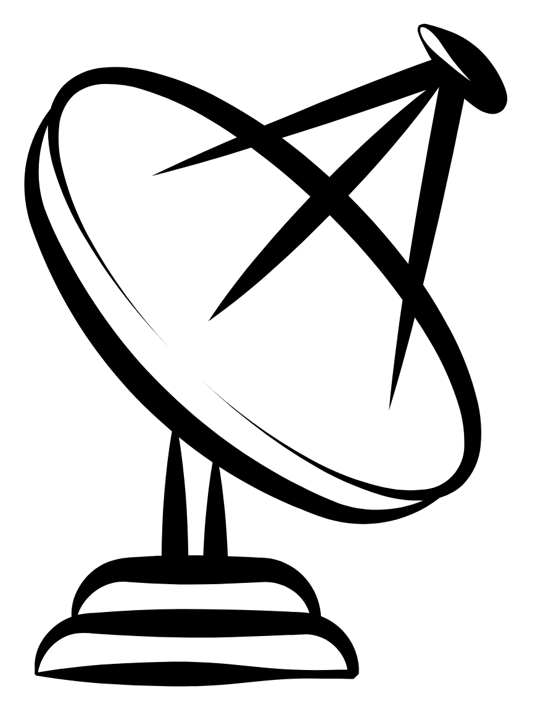

About This Project
Welcome to my radio telescope project documentation. This site showcases the creation process, including design decisions, hardware components, software implementations, and progress updates.
🎯 Objectives
Build a functional radio telescope and document the entire process
🔧 Challenges
Overcome software and hardware obstacles and learn from each iteration
📚 Knowledge Sharing
Share code, techniques, and insights with the community
Photo Gallery
Visual progress of the construction

Assembly Process

Component Testing

Final Structure

Integration Phase

Testing & Calibration

Results & Data
Photos are placeholders. Replace with your actual project images.
Code & Programs
Software and scripts for the telescope
Code for the mount
Visual studio code for the calculation of the position and control of the mount
View on GitHub →Project Timeline
Key milestones and updates
Planning & Design
Initial concept development and technical specifications.
Component Sourcing
Gathering materials and components for construction.
Construction
Assembly of the radio telescope structure.
Electronics Integration
Installing and testing electronic systems.
Software Development
Writing control and data processing software.
Testing & Calibration
Validating performance and optimizing settings.
Get in Touch
Interested in this project? Have questions or suggestions?
GitHub: @svetoslav-arabov
Project Repository: Radio Telescope EVA